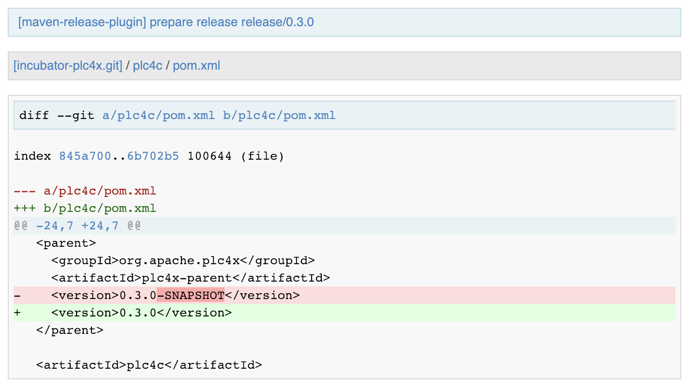

Releasing PLC4X Build-Tools
In contrast to the main project, the plc4x-build-tools repository contains a loose collection of sub-projects.
The main pom.xml in the root directory is mainly for allowing to import all modules into an IDE and shouldn’t be used for releases.
If you want to release a part of the build-tools, please execute the following release steps in the parts sub-directory.
In general the preparation steps for releasing a build-tool is equal to those of the main project.
So please check here (Chapters: Preparing your system for being able to release and Preparing the codebase for a release)
The rest of the steps are a lot simpler than those of the main project as there aren’t any profiles involved.
Creating a release branch (For the code-generation module)
According to SemVer, we have: Major, Minor and Bugfix releases.
For each new Major and Minor release we create a new branch at the beginning of a code-freeze phase.
So if currently the project version in develop is {0.13.0}, we create a branch release/{code-generation-short-version}.
When creating the branch is exactly the moment in which the version in develop is incremented to the next minor version.
This can and should be automated by the maven-release-plugin.
Per default the plugin will ask for the working copy version during the build execution.
This is the version the develop branch will be changed to.
mvn release:branch -DbranchName=releases/code-generation/{minor-version}
Per default the plugin suggests the next bugfix version as working version, however we want it to use the next minor version.
So in case of preparing the release branch for {0.13.0} the command would be the following:
mvn release:branch -DbranchName=releases/code-generation/{code-generation-short-version}
The plugin will then aks for the version:
What is the new working copy version for "PLC4X Build Tools: Code Generation"? (org.apache.plc4x.plugins:plc4x-code-generation) {code-generation-bugfix-version}-SNAPSHOT: : {code-generation-development-version}-SNAPSHOT
Where the suggested default is manually overridden.
This step now should perform quite quickly as no build and no tests are involved.
However in the end the versions of the develop branch are updated and a new releases/code-generation/{code-generation-short-version} branch is created.
Preparing develop for the next iteration
Now is a good time to add a new section to the RELEASE_NOTES document for the new SNAPSHOT version.
Here comes a template:
==============================================================
(Unreleased) Apache PLC4X {code-generation-development-version}-SNAPSHOT
==============================================================
New Features
------------
Incompatible changes
--------------------
Bug Fixes
---------
// Rest of the file
After that please remove the (Unreleased) from the following section, as we are currently working on its release.
Also be sure to do a quick full-text-search to check if the version was updated correctly everywhere.
| If you find anything here, you will need to pay attention during the release. |
Release stabilization phase
Now usually comes a phase in which last tests and checks should be performed.
If any problems are found they, have to be fixed in the release branch.
Changes should either be re applied in develop or cherry-picked, however merging things back can cause a lot of problems, and we no longer have the same versions.
Preparing a release
Before you start preparing the release, it is important to manually make the RELEASE_NOTES reflect the version we are planning on releasing.
| Be sure to ensure you have switched to the release branch before continuing. |
So be sure to remove the (Unreleased) and SNAPSHOT from the version.
As especially when switching a lot between different branches, it is recommended to do a clean checkout of the repository. Otherwise, a lot of directories can be left over, which would be included in the source-release zip. In order to prepare a release-candidate, the first step is switching to the corresponding release-branch.
| Again, just in case you missed the first warning: Be sure to ensure you have switched to the release branch before continuing. |
After that, the following command will to all preparation steps for the release:
mvn release:prepare
In general the plugin will now ask you 3 questions:
-
The version we want to release as (It will suggest the version you get by omitting the
-SNAPSHOTsuffix, keep it as it is) -
The name of the tag the release commit will be tagged with in the SCM (Name it
releases/code-generation/{release-version}(releases/code-generation/{0.13.0}in our case) -
The next development version (The version present in the pom after the release) (leave it as it is suggested by the plugin)
Usually for 1 and 3 the defaults are just fine, make sure the tag name is correct as this usually is different.
However, it is important to check that nowhere else SNAPSHOT versions are referenced.
What the plugin now does, is automatically to execute the following operations:
-
Check we aren’t referencing any
SNAPSHOTdependencies. -
Update all pom versions to the release version.
-
Run a build with all tests
-
Commit the changes (commit message:
[maven-release-plugin] prepare release releases/code-generation/{0.13.0}) -
Push the commit
-
Tag the commit
-
Update all poms to the next development version.
-
Commit the changes (commit message:
[maven-release-plugin] prepare for next development iteration) -
Push the commit
However, this just prepared the git repository for the release, we have to perform the release to produce and stage the release artifacts.
Please verify the git repository at: https://gitbox.apache.org/repos/asf?p=plc4x-build-tools.git is in the correct state. Please select the release branch and verify the commit log looks similar to this

It is important that the commit with the message "[maven-release-plugin] prepare release releases/code-generation/{0.13.0}" is tagged with the release tag (in this case releases/code-generation/{0.13.0})
If you check the commit itself, it should mainly consist of version updates like this:

The root pom has a few more changes, but in general this should be what you are seeing.
After that should come a second commit:

This now updates the versions again, but this time from the release version to the one we selected for the next development iteration (in this case {code-generation-bugfix-version}-SNAPSHOT)
| If the commit history doesn’t look like this, something went wrong. |
What if something goes wrong?
If something goes wrong, you can always execute:
mvn release:rollback
And it will change the versions back and commit and push things.
However, it will not delete the tag in GIT (locally and remotely). So you have to do that manually or use a different tag next time.
Performing a release
This is done by executing another goal of the maven-release-plugin:
mvn release:perform
This executes automatically as all information it requires is located in the release.properties file the prepare-goal prepared.
The first step is that the perform-goal checks out the previously tagged revision into the root modules target/checkout directory.
Here it automatically executes a maven build (You don’t have to do this, it’s just that you know what’s happening):
mvn clean deploy -P apache-release
As the apache-release profile is activated, this builds and tests the project as well as creates the JavaDocs, Source packages and signs each of these with your PGP key.
As this time the build is building with release versions, Maven will automatically choose the release url for deploying artifacts.
The way things are set up in the apache parent pom, is that release artifacts are deployed to a so-called staging repository.
You can think of a staging repository as a dedicated repository created on the fly as soon as the first artifact comes in.
After the build you will have a nice and clean Maven repository at https://repository.apache.org/ that contains only artifacts from the current build.
After the build it is important to log in to Nexus at https://repository.apache.org/, select Staging Repositories and find the repository with the name: orgapacheplc4x-{somenumber}.
Select that and click on the Close button.
Now Nexus will do some checks on the artifacts and check the signatures.
As soon as it’s finished, we are done on the Maven side and ready to continue with the rest of the release process.
A release build also produces a so-called source-assembly zip.
This contains all sources of the project and will be what’s actually the release from an Apache point of view and will be the thing we will be voting on.
This file will also be signed and SHA512 hashes will be created.
Staging a release
Each new release and release-candidate has to be staged in the Apache SVN under:
The directory structure of this directory is as follows:
./KEYS
./build-tools/code-generation/{0.13.0}
./build-tools/code-generation/{0.13.0}/rc1
./build-tools/code-generation/{0.13.0}/rc1/README
./build-tools/code-generation/{0.13.0}/rc1/RELEASE_NOTES
./build-tools/code-generation/{0.13.0}/rc1/apache-plc4x-code-generation-{0.13.0}-source-release.zip
./build-tools/code-generation/{0.13.0}/rc1/apache-plc4x-code-generation-{0.13.0}-source-release.zip.asc
./build-tools/code-generation/{0.13.0}/rc1/apache-plc4x-code-generation-{0.13.0}-source-release.zip.sha512
I usually prepare exactly the same directory structure, starting with the {0.13.0} locally and then just import everything using the following command:
svn import {0.13.0} https://dist.apache.org/repos/dist/dev/plc4x/build-tools/code-generation/{0.13.0} -m"Staging of rc1 of PLC4X Build-Tools (Code-Generation) {0.13.0}"
The KEYS file contains the PGP public key which belongs to the private key used to sign the release artifacts.
If this is your first release be sure to add your key to this file. For the format have a look at the file itself. It should contain all the information needed.
Be sure to stage exactly the README and RELEASE_NOTES files contained in the root of your project.
Ideally you just copy them there from there.
The three -source-release.zip artifacts should be located in the directory: code-generation/target/checkout/code-generation/target
So, after committing these files to SVN, you are ready to start the vote.
Starting a vote on the mailing list
After staging the release candidate in the Apache SVN, it is time to actually call out the vote.
For this we usually send two emails. The following would be the one used to do our first TLP release:
E-Mail Topic:
[VOTE] Apache PLC4X Build-Tools Code-Generation {0.13.0} RC1
Message:
Apache PLC4X Build-Tools Code-Generation {0.13.0} has been staged under [2]
and it’s time to vote on accepting it for release.
All Maven artifacts are available under [1]. Voting will be open for 72hr.
A minimum of 3 binding +1 votes and more binding +1 than binding -1
are required to pass.
Repository: https://gitbox.apache.org/repos/asf/plc4x-build-tools.git
Release tag: releases/code-generation/{0.13.0}
Hash for the release tag: {replacethiswiththerealgitcommittag}
Per [3] "Before voting +1 PMC members are required to download
the signed source code package, compile it as provided, and test
the resulting executable on their own platform, along with also
verifying that the package meets the requirements of the ASF policy
on releases."
You can achieve the above by following [4].
[ ] +1 accept (indicate what you validated - e.g. performed the non-RM items in [4])
[ ] -1 reject (explanation required)
[1] https://repository.apache.org/content/repositories/orgapacheplc4x-{somefourdigitnumber}
[2] https://dist.apache.org/repos/dist/dev/plc4x/build-tools/code-generation/{0.13.0}/rc1/
[3] https://www.apache.org/dev/release/validation.html#approving-a-release
[4] https://plc4x.apache.org/plc4x/latest/developers/release/validation.html
As it is sometimes to do the vote counting, if voting and discussions are going on in the same thread, we send a second email:
E-Mail Topic:
[DISCUSS] Apache PLC4X Build-Tools Code-Generation {0.13.0} RC1
Message:
This is the discussion thread for the corresponding VOTE thread.
Please keep discussions in this thread to simplify the counting of votes.
If you have to vote -1 please mention a brief description on why and then take the details to this thread.
Now we have to wait 72 hours till we can announce the result of the vote.
This is an Apache policy to make it possible for anyone to participate in the vote, no matter where that person lives and not matter what weekends or public holidays might currently be.
The vote passes, if at least 3 +1 votes are received and more +1 are received than -1.
After the 72-our minimum wait period is over, and we have fulfilled the requirement of at least 3 +1 votes and more +1 than -1, a final reply is sent to the vote thread with a prefix of [RESULT] in the title in which the summary of the vote is presented in an aggregated form.
E-Mail Topic:
[RESULT] [VOTE] Apache PLC4X Build-Tools Code-Generation {0.13.0} RC1
Message:
So, the vote passes with 3 +1 votes by PMC members and one +1 vote by a non PMC member.
Chris
Releasing after a successful vote
As soon as the votes are finished, and the results were in favor of a release, the staged artifacts can be released. This is done by moving them inside the Apache SVN.
svn move -m "Release Apache PLC4X {0.13.0}" \
https://dist.apache.org/repos/dist/dev/plc4x/build-tools/code-generation/{0.13.0}/rc1 \
https://dist.apache.org/repos/dist/release/plc4x/build-tools/code-generation/{0.13.0}
This will make the release artifacts available and will trigger them being copied to mirror sites.
This is also the reason why you should wait at least 24 hours before sending out the release notification emails.
Cleaning up older release versions
As a lot of mirrors are serving our releases, it is the Apache policy to clean old releases from the repo if newer versions are released.
This can be done like this:
svn delete https://dist.apache.org/repos/dist/release/plc4x/0.3.0/ -m"deleted version 0.3.0"
After this, https://dist.apache.org/repos/dist/release/plc4x should only contain the latest release directory.
Releasing the Maven artifacts
The probably simplest part is releasing the Maven artifacts.
In order to do this, the release manager logs into Nexus at https://repository.apache.org/, selects the staging repository and clicks on the Release button.
This will move all artifacts into the Apache release repository and delete the staging repository after that.
All release artifacts released to the Apache release repo, will automatically be synced to Maven central.
Merge back release version to release branch
The `release branch should always point to the last released version. This has to be done with git
git checkout release
git merge releases/code-generation/{0.13.0}
When there are conflicts it could help to use the theirs merge strategy, i.e.,
git merge -X theirs releases/code-generation/{0.13.0}
Possibly a manual conflict resolution has to be done afterwards. After that, changes need to be pushed.
In contrast to main releases of PLC4X we won’t do any GitHub Issues version updates, updating of the download page or notifying of the world email to announce@apache.org
So now you’re done. Congrats!